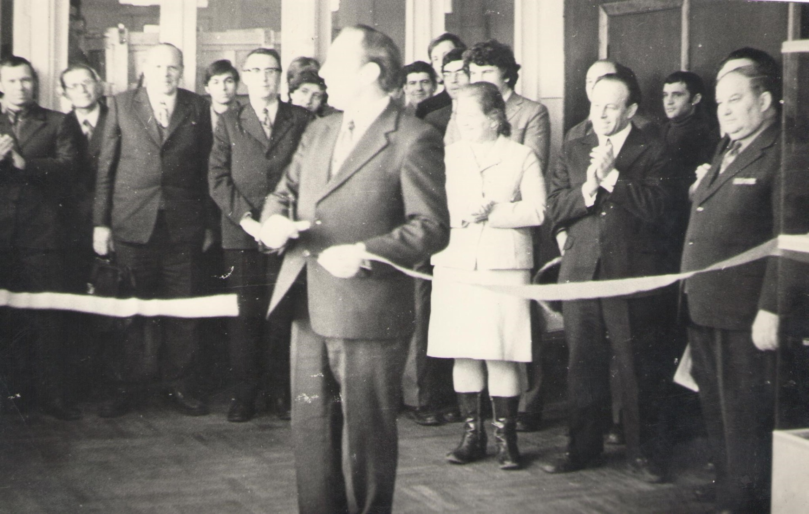
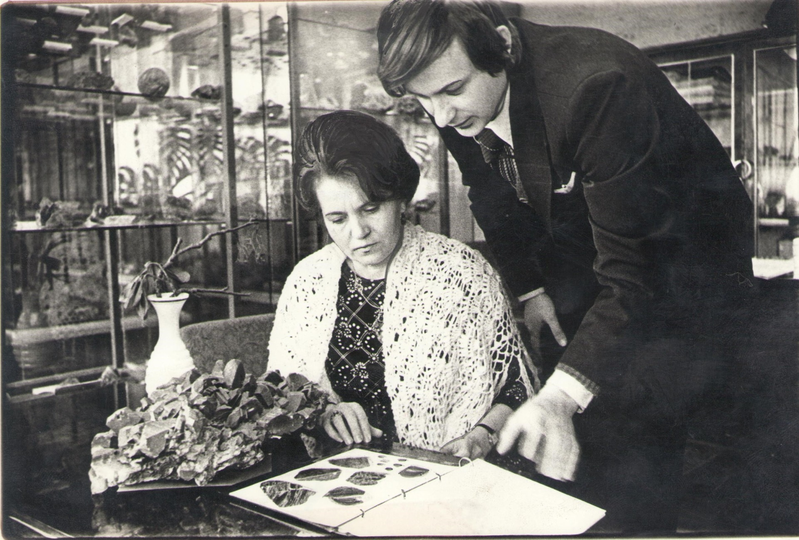

О Геологическом музее

Крупнейший на юге России минералогический музей геолого-географического факультета ведет свою историю от коллекции образцов минералов и горных пород минералогического кабинета Императорского Варшавского университета, эвакуированного в годы Первой мировой войны (в 1915 году) в г. Ростов-на-Дону. Образцы были перевезены доцентами физико-математичесвкого факультета, на котором в то время читались геологические дисциплины — Н.А. Григоровичем-Березовским и П.И.Лебедевым и долгие годы служили учебным материалом для подготовки студентов. В годы Великой Отечественной войны при эвакуации университета часть минералогической коллекции была вывезена в г. Ош Киргизской ССР, куда был эвакуирован университет. Оставшаяся в Ростове часть коллекции была почти полностью уничтожена 8 июля 1942 года прямым попаданием авиабомбы в здание университета на улице Максима Горького.
В послевоенное время сбор каменного материала, привозимого сотрудниками геолого-географического факультета из научных экспедиций и студентами с производственных практик набрал небывалые темпы. Образцы минералов и горных пород привозились со всех уголков Советского Союза и дальнего зарубежья, и, вскоре, их количество вышло за рамки необходимого для учебных коллекций Минералогического и Петраграфического кабинетов. 16 декабря 1974 года Ученым Советом геолого-географического факультета РГУ было принято решение создать на базе коллекции минералогического кабинета Минералого-петрографический музей. Данное решение было утверждено 20 декабря того же года Первым проректором РГУ В.И.Седлецким вместе с Паспортом и Положением музея. Торжественное открытие Музея состоялось 23 февраля 1976 года.
C этого дня богатейшая коллекция минералов и горных пород стала доступна всем желающим, выполняя функции не только «каменного учебника» для студентов, но и популяризатора геологических знаний среди широких масс населения. Первой заведующей музея с момента его открытия и до 1988 года была Алла Александровна Голикова-Заволженская – большой энтузиаст своего дела. Разработанная ею структура музея до сих пор лежит в основе современной выставочной экспозиции.
